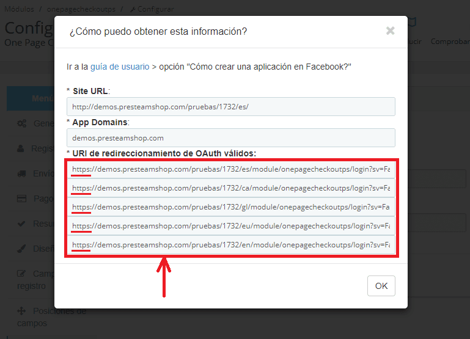
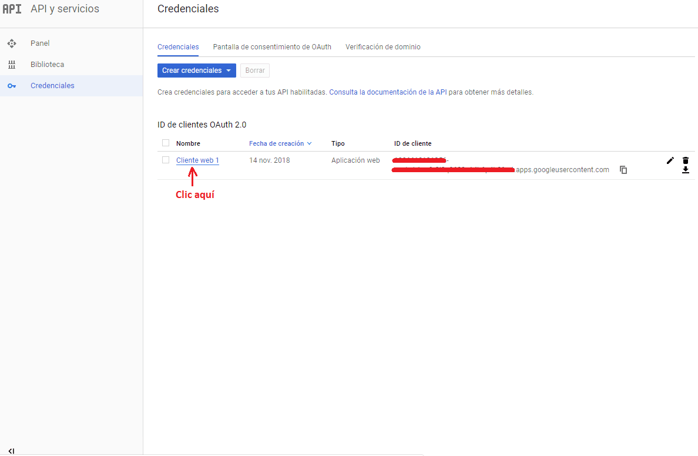

¿Aumenta su número de carritos abandonados? ¿Sus estadísticas muestran que los usuarios abandonan el proceso de compra?
Mejore sus resultados de ventas con este módulo para PrestaShop que le permitirá realizar las compras de la forma más fácil: en un solo paso. "One Page Checkout PS" ahorra tiempo a sus clientes a la hora de terminar la compra, acelera el proceso de pago y minimiza los campos de registro a rellenar por el cliente.
Fácil e intuitivo de usar para los usuarios, ahorra tiempo y minimiza los abandonos de carrito. ¡Sus ventas lo notarán!
General
En la sección de configuración General se encontrarán las opciones de parametrización que determinará el comportamiento del módulo de manera general.
Modo de prueba
Al habilitar esta opción, aparecerá un nuevo campo de texto en el cual debe ingresar la o las IP's para las cuales se habilitará el módulo. El módulo quedará deshabilitado para las IP's que no se hayan guardado.
Es recomendable activar esta opción para probar el módulo en su tienda antes de habilitarlo a los clientes
Habilitar compra de invitados
Si habilita esta opción, usted permite que se realicen pedidos como invitado.
Redirigir directamente a la página de pago
Si habilita esta opción se enviará directamente a la página de pago. Si se encuentra deshabilitada, se mostrará una vista de resumen del pedido antes de poder visualizar la página del OnePageCheckoutPS.
Reemplazar el formulario de registro por el del checkout
Al habilitar esta opción, el formulario del Checkout se mostrará en lugar de formulario de registro, sólo con las opciones de datos personales, dirección de envío y dirección de facturación en caso de ser establecida.
Mostrar formulario de registro del checkout en: Mis direcciones
Al habilitar esta opción e ir a Mis direcciones de Mi cuenta, se mostrará el formulario de registro del checkout con las opciones de dirección de envío y dirección de facturación.
Mostrar formulario de registro del checkout en: Mi información personal
Al habilitar esta opción e ir a Mi información personal de Mi cuenta, se mostrará el formulario de registro del checkout con las opciones de datos personales.
Mostrar la dirección de entrega en la compra de productos virtuales
Si habilita esta opción, la dirección de entrega será mostrada aunque los productos comprados sean productos virtuales.
Confirmar la dirección de envío antes de hacer checkout
Si habilita esta opción, se mostrará una ventana emergente donde podrá confirmar que es la dirección de envío correcta antes de generar el pedido.
Escoger un método de pago por defecto
En este campo podrás seleccionar el método de pago que estará seleccionado por defecto cuando el cliente vaya a la página del checkout.
Escoger un transporte por defecto
En este campo podrás seleccionar el transporte que estará seleccionado por defecto cuando el cliente vaya a la página del checkout.
Añadir a clientes nuevos en el grupo
Cuando un cliente se registre en su tienda desde la página de OnePageCheckoutPS, éste se debe registrar en un grupo de clientes. En esta opción se configura en qué grupo estará registrado por defecto el nuevo cliente.
Añadir a nuevos clientes en estos otros grupos
Si además desea que los clientes nuevos se encuentren agregados en otros grupos, puede seleccionar uno o varios grupos donde quedarán agregados.
Para seleccionar varios grupos puede presionar la tecla CTRL de su teclado y dar clic a cada uno de los grupos que desea seleccionar, si el grupo ya está seleccionado y desea quitarlo de la selección, con CTRL presionado debe dar clic sobre él.
Validar identificación de España y Chile
Si habilita esta opción, cuando un cliente añada productos al carrito de compras y proceda a realizar el pedido, el sistema validará si la cédula ingresada es válida. Si la cédula no es válida el cliente no podrá realizar el pedido.
Contenedor de página (HTML)
En este campo de configuración se debe configurar el selector del contenedor HTML donde se ubicará la vista del módulo.
Se recomienda dejar este campo con el valor predeterminado, a menos que su plantilla tenga un identificador diferente y deba cambiarse.
Identificador de cliente
Al instalar el módulo se genera un nuevo cliente que es de uso exclusivo del módulo, con éste cliente se realizan operaciones internas para obtener tarifas, precios, tiempos, etc. con respecto a los productos que se han seleccionado; todo esto siempre que no se haya iniciado sesión.
El ID del cliente es el que está configurado por defecto en este campo de configuración y no se debe cambiar a menos que (por temas de migración de tiendas o por alguna modificación del administrador) se borre el cliente y se haya configurado uno nuevo para que haga este mismo trabajo. Se recomienda no cambiar este campo ni eliminar/editar el cliente que crea el módulo llamado “OPC PTS Not Delete” el cual se encuentra desactivado (tampoco debe activarse).
No cambiar a menos de que el desarrollador le indique.
Registro
En la sección de registro se configura el comportamiento que van a tener los campos en el paso número uno del checkout, el cual está determinado a recopilar la información del cliente (nombres, direcciones, números de contacto, etc.)
Requerir iniciar sesión a un cliente registrado
Al habilitar esta opción, los clientes que ya tengan una cuenta no podrán volver a registrarse con el mismo correo electrónico.
Capitalizar los campos
Si habilita esta opción la primera letra de cada palabra en los campos será mayúscula.
Esta opción solo aplica para los campos: Nombre, Apellido, Dirección, Ciudad, Empresa y Código postal. No aplica para los campos personalizados.
Requerir aceptar políticas de privacidad antes de la compra
Esta opción permite que se muestre o no el control para aceptar las políticas de privacidad. Si se deshabilita esta opción no se mostrará el aceptar las políticas de privacidad.
Si se habilita se mostrará una lista de CMS, la opción que se seleccione será el contenido que se mostrará cuando el cliente de clic en “leer”.
Solicitar dirección de facturación
Si habilita esta opción, se va a solicitar la dirección de facturación para el pedido y se mostrará otra opción donde se preguntará si la dirección de facturación debe ser requerida o no. Si deshabilita esta opción, la dirección de facturación será la misma de envío.
Usar el mismo nombre y apellido del cliente en la dirección de facturación
Esta opción se mostrará cuando la opción Solicitar dirección de facturación esté habilitada. Si habilita esta opción, el nombre y apellido del cliente será la misma en la dirección de facturación y estos campos no aparecerán en la configuración de la dirección de facturación. Si deshabilita esta opción, estos campos se mostrarán en la dirección de facturación.
Insertar automáticamente el código ISO del país en los dos primeros caracteres de la identificación en la dirección de facturación
Esta opción permite añadir automáticamente como prefijo los dos primeros caracteres del código ISO del País a la identificación en la dirección de facturación.
Insertar automáticamente el código ISO del país en los dos primeros caracteres de la identificación en la dirección de entrega
Esta opción permite añadir automáticamente como prefijo los dos primeros caracteres del código ISO del País a la identificación en la dirección de entrega.
Usar el mismo nombre y apellido del cliente en la dirección de entrega
Si habilita esta opción, el nombre y apellido del cliente será la misma en la dirección de entrega y estos campos no aparecerán en la configuración de la dirección de entrega.
Si deshabilita esta opción, estos campos se mostrarán en la dirección de entrega.
Solicitar la confirmación del correo electrónico
Esta opción permite que se muestre el campo de confirmación de correo electrónico por motivos de seguridad. Si no está habilitada, no será mostrado el campo de verificación de confirmar correo electrónico.
Solicitar contraseña
Si está opción se encuentra deshabilitada, cuando se cree un nuevo cliente, la contraseña será generada automáticamente y enviada a su correo.
Si la opción se encuentra habilitada entonces el cliente tendrá la opción de escribir la contraseña que desee para su cuenta. Además, será mostrada otra opción llamada Opción de auto-generar la cual mostrará o no un control para que el cliente pueda autogenerar una contraseña si lo desea. Si la opción de auto-generar contraseña no se encuentra activa, ésta se autogenerará.
Si la opción - Solicitar contraseña - no está activa, la contraseña del cliente se creará automáticamente.
No se muestra la - Opción de auto-generar - cuando la opción - Habilitar compra de invitados - de la pestaña General está activa.
Mostrar en lista los grupos de clientes
Al momento de registrarse, el cliente puede tener la oportunidad de elegir el grupo al cual desee pertenecer, para esto se debe activar esta opción y enseguida será mostrada la lista de grupos que se visualizarán para que el cliente los pueda seleccionar. Para seleccionar varios grupos puede presionar la tecla CTRL de su teclado y dar clic a cada uno de los grupos que desea seleccionar, si el grupo ya está seleccionado y desea quitarlo de la selección, con CTRL presionado debe dar clic sobre él. Si no selecciona ningún grupo, entonces todos los grupos de la lista serán mostrados.
Si eliges un grupo, entonces se mostrarán sólo los grupos seleccionados, de lo contrario todos los grupos se mostrarán.
Mostrar listado de ciudades usando Geonames.org
Si habilita esta opción se mostrará una lista desplegable con ciudades según la provincia seleccionada.
Esta opción no funciona cuando el módulo Shipping Configurator Pro está instalado y activo.
Usar autocompletar de Geonames.org desde el Código postal
Si habilita esta opción se mostrarán sugerencias para completar las direcciones según el código postal que esté escribiendo.
Usar autocompletar de Google desde la dirección
Esta opción habilita la integración con el API de Google para permitir brindar una ayuda visual al momento de escribir la dirección. Esto aplica tanto para la dirección de envío como de facturación.
Google API KEY
En este campo de texto se digita el API KEY que ofrece Google para poder hacer uso de la herramienta de autocompletado de direcciones, este campo se mostrará si se ha seleccionado la opción Usar autocompletar de google desde la dirección.
El API KEY de Google para la librería de Autocompletado desde la Dirección se crea desde la consola de desarrollo de Google, para lograrlo debe tener una cuenta de Google, iniciar sesión e ingresar a esta dirección.
Una vez haya ingresado en el anterior enlace, aparecerá la siguiente ventana, donde debe seleccionar en la parte izquierda Get API Key y luego el botón de la esquina superior derecha GET STARTED.
En la siguiente ventana, selecciona Maps y clic en el botón CONTINUAR.
En esta ventana, seleccione o cree un proyecto, puede seleccionar My Project o crear uno que usted desee, luego clic en el botón NEXT.
En esta ventana, seleccione CREAR CUENTA DE FACTURACIÓN.
En la siguiente ventana, seleccione su País, aceptar las Condiciones del Servicio y Actualizaciones por correo electrónico en caso de que las desee, clic en el botón ACEPTAR Y CONTINUAR.
En esta ventana, debe digitar sus datos personales y por último, clic en el botón INICIAR PRUEBA GRATUITA.
Autocompletar el campo dirección con la sugerencia de Google Maps
Al habilitar esta opción, mientras está digitando una dirección, google maps automáticamente le sugiere una, si desea puede autocompletar la dirección con la sugerencia de google maps o seguir escribiendo su dirección.
Envío
En la sección de envío se configura el comportamiento que van a tener los campos en el paso número dos del checkout, el cual está determinado para seleccionar las preferencias de envío del pedido.
Habilitar compatibilidad para módulos de envío
Al habilitar esta opción, se agrega un botón en métodos de envío, al dar clic allí abre todos los métodos de pago en otra página para cuando se actualice, se redirija a la página del Checkout.
Habilitar esta opción solo si algún módulo de envío no funciona correctamente. Esto añade un pequeño paso extra.
Mostrar descripción de los transportistas
Esta opción oculta o muestra la descripción de los transportistas en la lista. Si se deshabilita solamente se mostrará el nombre, imagen y precio.
Mostrar imagen de transportistas
Esta opción oculta o muestra la imagen de los transportistas en la lista. Si se deshabilita solamente se mostrará el nombre, precio y descripción (a menos que se haya deshabilitado en la opción Mostrar descripción de los transportistas).
Recargar envío al cambiar de provincia
Si esta opción está habilitada se mostrarán automáticamente los métodos de envío disponibles para la provincia seleccionada.
Requerir ingresar un código postal
Si esta opción está habilitada, será obligatorio digitar un código postal para mostrar los métodos de envío disponibles según los módulos de envío que requieren esta información.
Módulo de envío que requiere un código postal
En este campo de texto se configurarán los módulos que requieran un código postal para determinar el precio y disponibilidad de envío. Los nombres de los módulos deben estar separados por coma (,) y sin ningún espacio.
Requerir ingresar una ciudad
Si esta opción está habilitada, será obligatorio ingresar una ciudad para mostrar los métodos de envío disponibles según los módulos de envío que requieren esta información.
Módulo de envío que requiere una ciudad
En este campo de texto se configurarán los módulos que requieran una ciudad para determinar el precio y disponibilidad de envío. Los nombres de los módulos deben estar separados por coma (,) y sin ningún espacio.
Pago
En la sección de pago se configura el comportamiento que van a tener los campos en el paso número tres del checkout, el cual está determinado para seleccionar las preferencias de pago del pedido.
General
Mostrar imágenes de métodos de pago.
Esta opción permite mostrar u ocultar las imágenes de los métodos de pago en el tercer paso del One Page Checkout.
Mostrar descripción detallada de los métodos de pago.
Al habilitar esta opción, se mostrará la descripción detallada del método de pago, bien sea la que este tenga por defecto, o la que e introduzca para personalizarla.
Después de desactivar esta opción, los métodos de pago que contienen formularios para solicitar información se verán afectados.
Métodos de pago
En esta sección se pueden personalizar el título, descripción e imagen de los métodos de pago.
Envío según pago
En esta sección se puede configurar el método de pago que va a estar disponible según el método de envío. Para seleccionarlos sólo debe dar clic al control de chequeo de cada método de pago.
Resumen
En la sección de resumen se configura el comportamiento que van a tener los campos en el paso número cuatro del checkout, el cual está determinado para mostrar la información de los productos en el pedido, vales de descuento, información de impuestos y totales.
Requerir aceptar términos y condiciones antes de la compra
Esta opción permite que se muestre o no el control para aceptar los términos y condiciones. Si se deshabilita esta opción no se mostrará el aceptar los términos y condiciones.
Si se habilita se mostrará una lista de CMS, la opción que se seleccione será el contenido que se mostrará cuando el cliente de clic en “leer”.
Mostrar el enlace "Continuar Comprando"
Si la opción está habilitada, el botón de CONTINUAR COMPRANDO se mostrará, permitiendo al cliente regresar a la tienda y agregar otros productos; de lo contrario, el botón no aparecerá.
URL Personalizada para el botón de "Continuar comprando"
En este campo se puede definir la URL a la cual se enviará cuando se presione el botón de CONTINUAR COMPRANDO, se recomienda usar el prefijo http:// para URL externa. Si desea que el URL sea la página de inicio de su tienda, puede dejar vacío este campo.
Esta opción se mostrará si la opción Mostrar el enlace “continuar comprando” está habilitada.
Mostrar caja de descuento
Al habilitar esta opción, aparecerá una cuadro de texto donde puede añadir el código de descuento, en caso de contar con uno.
Así tenga activada esta opción, debe tener descuentos creados para que sea mostrado.
Mostrar la caja de texto para mensaje de pedido
Esta opción muestra una caja de texto para enviar comentarios sobre el pedido, al estar habilitada.
Eliminar el enlace de los productos
En el resumen del Checkout siempre se muestra el nombre del producto con un enlace a la página del producto. Cuando esta opción se encuentre habilitada, el enlace no se mostrará y sólo aparecerá el nombre del producto.
Mostrar zoom en la imagen del producto
Cuando se habilita esta opción, se ve la imagen del producto más grande en el resumen del pedido en la página del Checkout.
Mostrar subtotal de productos
Oculta o muestra la información del total de los productos.
Mostrar total de descuento
Oculta o muestra la información del total de los descuentos, si lo hubiere.
Mostrar total de envoltura
Oculta o muestra la información del total de las envolturas, si lo hubiere.
Mostrar total de envío
Oculta o muestra la información del total de envío.
Mostrar total sin impuestos
Oculta o muestra la información del total sin los impuestos incluidos.
Mostrar total de impuestos
Oculta o muestra la información del total de los impuestos.
Mostrar total
Oculta o muestra la información del total del pedido.
Mostrar envío gratuito faltante
Si usted tiene configurado una condición de envío gratuito según precio del pedido, puede habilitar esta opción si desea que en el resumen del pedido se muestre cuanto precio en compras falta para conseguir que el cliente obtenga el envío gratuito.
Mostrar peso
Oculta o muestra la información del peso de cada producto.
Mostrar referencia
Oculta o muestra la información de la referencia de cada producto.
Mostrar precio unitario
Oculta o muestra la información del precio unitario de cada producto.
Mostrar disponibilidad
Oculta o muestra en el resumen del carrito de compras, si el producto está disponible o no.
Esta opción solo funciona cuando la opción Habilitar administración de stock está activa en Parámetros de la Tienda - Configuración de productos
Mostrar tiempo de entrega del producto
Oculta o muestra en el resumen del carrito de compras, el tiempo de entrega del producto.
Habilitar hook de carrito de compra
Algunos módulos ejecutan acciones o muestran cierto tipo de información en el carrito de compra. Si usted tiene algún módulo que realice acciones de éste tipo y además desea que se muestren esas acciones o vistas, entonces habilite esta opción, de lo contrario deshabilítela.
Diseño
En la sección de diseño se configuran los colores que va a tener la vista del checkout.
Para configurar los colores debe dar clic en el cuadro que está al lado derecho del campo de texto y elegir el color que desee. Si usted ya tiene los códigos hexadecimales de los colores que desea configurar, entonces los puede ingresar directamente en el campo de texto. Si el color no se define para alguna de las configuraciones, se tomará el color por defecto del módulo OnePageCheckoutPS.
Color del fondo
En esta opción se configura el color de fondo que tendrá la vista.
Color del borde
En esta opción se configura el color del borde de la vista, es el borde externo.
Color de las imágenes
En esta opción se configura el color de las imágenes/íconos que tendrán algunos de los títulos, los botones de agregar o quitar productos, etc.
Color del texto
Ingrese aquí el color del texto que desea para la página de OnePageCheckoutPS.
Color del seleccionado de Envío y Pago
En esta opción se configura el color de fondo que tendrán los métodos de envío y de pago al ser seleccionados.
Color del texto del seleccionado de Envío y Pago
En esta opción se configura el color del texto que tendrán los métodos de envío y de pago al ser seleccionados.
Color del Botón de checkout
En esta opción se configura el color de fondo que tendrá el botón del Checkout (Confirmar Pedido).
Color del texto de Botón de checkout
En esta opción se configura el color del texto y el borde que tendrá el botón del Checkout (Confirmar Pedido)
Campos del registro
En la sección de los campos del registro se configura la disponibilidad, requerimientos y textos de los diferentes campos que se muestran y recolectan información en la vista del módulo.
En la tabla que se muestra se dividen los campos según colores:
- Azul: Campos referentes a la información del cliente
- Verde: Campos referentes a la información de la dirección de entrega
- Amarillo: Campos referentes a la información de la dirección de facturación
En la columna de ACCIONES se mostrará un botón EDITAR que al dar clic se mostrará una ventana emergente con los datos del campo, ahí se podrán editar sus valores.
Administrar opciones de campos
Este botón permite crear opciones para los elementos que pueden tener múltiples opciones como listas desplegables, checkbox, etc.
Nuevo campo personalizado
Al dar clic sobre este botón aparecerá la siguiente ventana:
Ingrese los datos requeridos y cree un nuevo elemento(campo de texto, lista desplegable, etc) en el formulario del Checkout.
Nombre
Este control informativo hace referencia al nombre que tendrá el campo internamente. No puede contener espacios ni carácteres especiales; solamente letras, números y guiones.
Objeto
Este control informativo hace referencia al objeto al cual pertenece, éste puede ser Cliente, Dirección de envío o Dirección de facturación.
Descripción
Este control permite editar el nombre externo que tendrá el campo para la vista del cliente. Se puede configurar en los diferentes idiomas de la tienda.
Label
Este control permite colocar un texto personalizado debajo del campo a la vista del cliente. Se puede configurar en los diferentes idiomas de la tienda.
Tipo
Este control informativo hace referencia al tipo de datos que va a tener como valor el campo. Sólo se puede escribir números en este campo.
Tamaño
Este control informativo hace referencia al tamaño de los valores que va a tener el campo, sólo aplica para campos de tipo cadena de texto.
Tipo de control
Este control informativo hace referencia al tipo de control que va a tener el campo, según el tipo de control se va a mostrar en la vista como una lista de selección o un campo de texto.
Valor por defecto
Este control hace referencia al valor por defecto que va a tener el campo, este valor se mostrará al iniciar como un valor predeterminado.
Requerido
Este control permite definir si el campo va a ser requerido (obligatorio) para el cliente o se puede omitir.
En la columna REQUERIDO de la tabla se puede dar clic en los botones que se muestran para cambiar el estado del campo, cuando está en color rojo con una equis significa que el campo no es requerido (obligatorio) para ser diligenciado por parte del cliente, cuando está en verde con un símbolo de chequeo significa que el campo es requerido (obligatorio) para el cliente.
Activo
Este control permite definir si el campo va a estar habilitado para ser mostrado en la vista y que el cliente lo pueda diligenciar.
En la columna ACTIVO se puede dar clic en los botones que se muestran para cambiar el estado del campo, cuando está en color rojo con una equis significa que el campo no está activo, por lo tanto, no se verá en la vista del módulo, cuando está en verde con un símbolo de chequeo significa que el campo está activo y se mostrará en los formularios que debe diligenciar el cliente.
Posiciones de campos
En la sección de Posiciones de los campos se configura el orden que tendrán los campos en la vista del módulo. En esta sección se mantienen los colores de los campos según su objeto (ver CAMPOS DE REGISTRO)
Para cambiar el orden de los campos debe arrastrar cada etiqueta que haga referencia a un campo y ubicarla enseguida de otra etiqueta según el orden que usted prefiera. También puede arrastrarla para dejar en una nueva fila para que quede en una fila única; además puede ordenar las filas completas, para esto debe arrastrar en cualquier lugar del espacio blanco que hay en cada campo que está encerrado por un borde, el cual hace referencia a la fila.
La configuración del orden se guarda automáticamente luego de cada ordenamiento.
¿Cómo crear una aplicación en Facebook?
- Ir a Facebook Developer e iniciar sesión con sus credenciales.
- Clic sobre el botón Crear una nueva aplicación .
- Aparecerá un popup, llenar el formulario y hacer clic sobre el botón Crear identificador de la aplicación.
-
Se mostrarán las aplicaciones que Facebook permite crear, se debe dar clic en el botón Configurar de la aplicación Inicio de Sesión con Facebook.
-
En la ventana siguiente debe seleccionar la pestaña Web, escribir la URL de su tienda principal y presionar el botón Guardar.
-
Después de guardar la URL de la tienda, se debe dar clic a la opción Configuración y después a Información básica. Ahí se deben introducir todos los datos requeridos para lograr un correcto funcionamiento de la aplicación.
Se debe tener en cuenta que para poder activar la aplicación de Facebook y poder ser usada por los visitantes de la tienda, se debe añadir las URL de políticas de privacidad, términos y condiciones en la información básica de la aplicación.
-
Al terminar de ingresar la información básica y guardarla, en el mismo panel izquierdo se debe dar clic en la opción Inicio de Sesión con Facebook y después a Configuración, de esta forma se mostrará una ventana con nuevas opciones de configuración, las cuales se explican en la siguiente imagen.
Tener en cuenta que la (s) URL (s) de la tienda para el campo URL de redireccionamiento de OAuth válidos de la anterior ventana, se debe (n) tomar del campo *Valid OAuth Redirect URls:, el cual aparece en el módulo, en la pestaña Login Social, Facebook y seleccionar ¿Cómo puedo obtener esta información?, como se muestra en la siguiente imagen.

Habilitar Facebook
Al tener esta opción deshabilitada, no es necesario que borres el API Key y el Secret Key, solo habilita esta opción cuando requieras visualizar el botón de la aplicación de Facebook.
¿Cómo crear una aplicación en Google?
- Ir a Google Api Console e iniciar sesión con sus credenciales
-
Presionar el botón CREAR PROYECTO ,
ingresar el Nombre del proyecto y hacer clic sobre el botón CREAR.
-
Hacer clic en el icono Notificaciones de la parte superior derecha y seleccionar el proyecto creado.
-
Posteriormente aparecerá una nueva ventana, ir a la opción APIs y dar clic en Ir a la visión general de las API.
-
Clic sobre la opción ENABLE APIS AND SERVICES.
-
Posteriormente aparecerá una nueva vista, digitar en la caja de texto que dice Buscar APIs y servicios, maps habilitar todas las APIs
que contengan la palabra maps, luego de hacer esto, digitar google+ y enter.
-
Aparecerá la siguiente ventana, donde se debe dar clic en Google+ API
-
Hacer clic en el botón HABILITAR
-
Hacer clic en el botón CREAR CREDENCIALES
-
En la siguiente ventana, seleccionar en el campo ¿Qué API estás utilizando? la opción Google+ API, ¿Desde dónde llamarás a la API? la opción Navegador web (Javascript), ¿A qué tipo de datos accederás? la opción Datos del usuario,
y hacer clic sobre la opción ¿Qué credenciales necesito?
-
Te aparecerá una ventana emergente, dar clic en en el botón NOT NOW
-
En la ventana Credenciales, puede dejar el Nombre que aparece en la opción Crear un ID de cliente de OAuth 2.0 o cambiarlo por uno que usted desee. Los valores a introducir
en las opciones "Authorized JavaScript Origins" para el campo "Orígenes autorizados de Javascript" y "Authorized redirect URIs" para el campo "URl de redireccionamiento autorizados", los encuentra en la configuración
del módulo, en "Login social -> Google" al hacer clic en el botón ¿Cómo puedo obtener esta información?.
Por último, hacer clic sobre la opción Crear ID de cliente de OAuth
-
En la siguiente ventana, debe digitar la Dirección de correo electrónico y el Nombre de producto que se va a mostrar a los usuarios.
Por último, hacer clic sobre la opción Continuar.
-
En la siguiente ventana, aparecerá el Client ID con una opción para Descargar, la cual la podrá exportar en el momento que lo necesite.
Por último, hacer clic sobre la opción Listo.
-
En esta ventana aparecerá(n) la(s) credencial(es) creada(s), al dar clic en el nombre de la credencial desplegará en otra ventana la información requerida.
 -
Debes dar clic en la pestaña Pantalla de consentimiento de OAuth y diligenciar los datos que se muestran en la imagen con una flecha, por último clic en guardar.
-
Luego, dar clic en la pestaña Verificación de dominio y dar clic en el botón Añadir un dominio.
-
Aparecerá una ventana donde debes digitar tu dominio como se indica en el ejemplo y por último, dar clic en el botón AÑADIR UN DOMINIO.
-
En la pestaña Credenciales, al dar clic en la API creada, te aparecerá el API Key que corresponde al ID de cliente y el Secret Key que corresponde al Secreto de cliente de la aplicación.
Habilitar Google
Al tener esta opción deshabilitada, no es necesario que borres el API Key y el Secret Key, solo habilita esta opción cuando requieras visualizar el botón de la aplicación de Google.
Paypal
¿Cómo crear una aplicación en Paypal?
- Ir a https://developer.paypal.com/, hacer clic en el botón Log In e iniciar sesión en Paypal
- Hacer clic en el botón Dashboard de la parte superior derecha de la pantalla
-
Seguir los pasos de la imagen:
-
Llenar el formulario y oprimir el botón Create App:
-
Una vez creada la aplicación ya puede ver el App ID y App Secret de la aplicación.
-
Buscar la sección LIVE APP SETTINGS y seguir los pasos de la imagen:
-
Después de haber dado clic en la opción Advanced Options
se desplegará un formulario, seguir los pasos:
- Seleccionar las opciones: Personal Information y Address Information.
- Ingresar una URL de políticas de privacidad y de términos y condiciones.
- Seleccionar la opción: Allow the customers who haven't yet confirmed their email address with PayPal, to log in to your app.
- Oprimir el botón Save -
Paypal requiere un permiso para poder acceder a la información del cliente para el inicio de sesión, por lo tanto, es necesario que envíe un correo a help-loginappreview@paypal.com solicitando los siguientes permisos:
Personal Information:
- Date of birth
Address Information:
- Email address
- Street addres
- Zip code
- City
- Country
- State
Indique en el correo que estos datos se usarán para el inicio de sesión y creación de dirección del cliente en su tienda PrestaShop a través del módulo One Page Checkout PS. Estos datos se obtienen una vez que el cliente presione el botón de inicio de sesión con Paypal.
Habilitar Paypal
Al tener esta opción deshabilitada, no es necesario que borres el API Key y el Secret Key, solo habilita esta opción cuando requieras visualizar el botón de la aplicación de Paypal.
 Biocryptology
Biocryptology
Cómo crear tu dominio en Biocryptology?
- Ir a https://biocryptology.com/, hacer clic en el botón Mis dominios e iniciar sesión en Biocryptology
-
Seguir los pasos de la imagen:
- Hacer clic en el botón +Añadir dominios de la parte superior derecha de la pantalla
- En esta ventana, digite su dirección de dominio y una descripción corta opcional.
- Aparecerá la siguiente ventana, donde puede copiar el código y dar clic en el botón Cerrar
- En esta ventana, queda creado tu dominio, dar clic para modificarlo.
- Dar clic en el botón Añadir plugin del campo Plugins.
- En esta ventana, puedes cambiar la imagen (opcional), nombre del plugin (visible), seleccionar Generar clave secreta, colocar la URl de política de privacidad de tu tienda. También añadir post login y post logout URL. Por último, clic en el botón GUARDAR.
-
Al añadir un post login, digite la(s) Post login URLs que corresponde(n) al Añadir post login URL y la(s) post logout que corresponde(n) al Añadir post logout URL de la aplicación.
-
Seleccionar la opción Editar del plugin que hayas creado.
- Aparecerá esta ventana, con el API Key que corresponde al Cliente ID y el Secret Key que corresponde al Clave secreta de la aplicación.
Habilitar Biocryptology
Al tener esta opción deshabilitada, no es necesario que borres el API Key y el Secret Key, solo habilita esta opción cuando requieras visualizar el botón de la aplicación de Biocryptology.
Estadísticas
En esta sección se puede ver un gráfico circular que muestra el número de conexiones por cada red social (Facebook, Google, Paypal, Biocryptology) del módulo.
Información
En esta sección configura la tarea CRON para eliminar las direcciones vacías creadas por el módulo en su tienda.
Traducir
En esta sección se configuran las traducciones del módulo.
Seleccione un idioma
En esta lista desplegable seleccione el idioma a traducir. Después de haber seleccionado una opción, los formularios de cada fichero del módulo se llenarán con los valores guardados anteriormente. Si no se encuentran valores los campos de los fomularios quedarán en blanco.
Guardar
Este botón le permite guardar la traducción realizada.
Guardar y Descargar
Este botón le permite guardar y descargar un archivo .php con la traducción realizada.
Expandir todo
Este botón le permite expandir los archivos de esta página.
Contraer todo
Este botón le permite contraer los archivos de esta página.
Editores de código
En esta sección usted puede agregar o modificar código css y javascript de los archivos del módulo sin necesidad de acceder directamente a estos. Por ejemplo: Para modificar código css ingrese al apartado de CSS, busque el archivo que desea editar, ingresa el código css y presiona el botón Guardar.
Sugerencias
Esta sección le permite comunicarse con nosotros ya sea para reportar problemas y contarnos sus dudas, o para compartir con nosotros sus sugerencias, funcionalidades y opiniones a cerca del módulo.
API Key Facebook
En este campo de texto debe ingresar el API Key de la aplicación de Facebook.